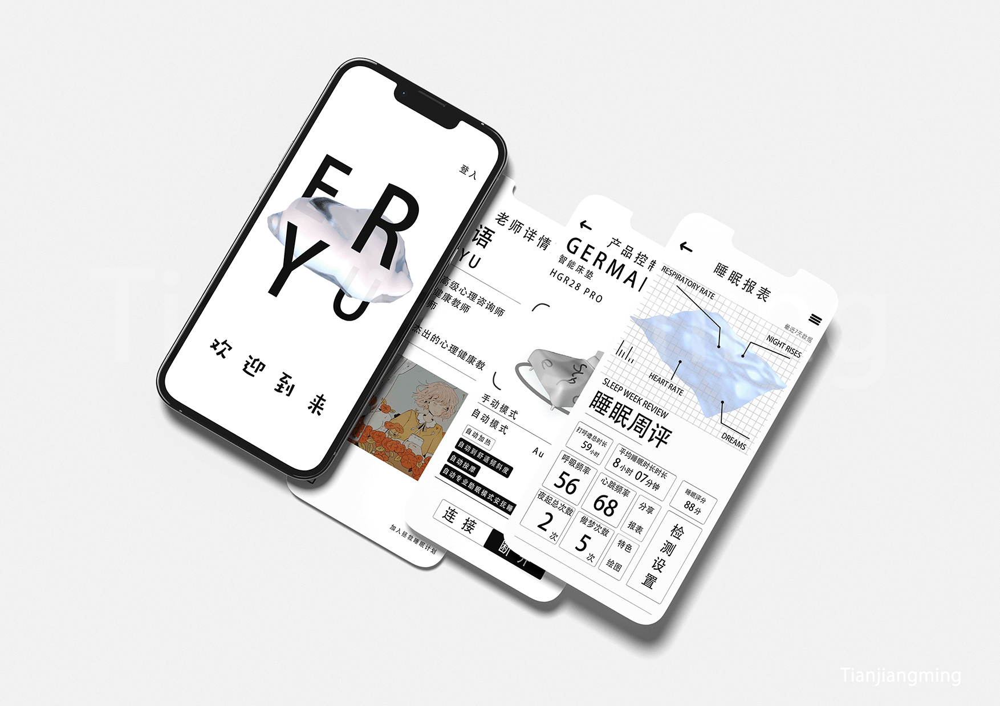

← 返回主页 BACK TO HOME13 / 17
交互设计 · UI / UX / 2022
ERYU 智能陪伴产品
ERYU SMART COMPANION
结合物联网与 UX 设计的陪伴式智能产品体验。

01 / OVERVIEW
结合物联网与 UX 设计的陪伴式智能产品体验。
项目从智能化与人性化使用情境出发，整理产品形态、界面流程和服务接触点，探索设备如何更自然地进入日常陪伴关系。
- 年份 / YEAR
- 2022
- 类型 / TYPE
- 交互设计 · UI / UX
- 工具 / TOOLS
- Adobe XD / Photoshop / Illustrator
- 角色 / ROLE
- 独立设计 / INDEPENDENT
02 / PROCESS + OUTPUT
06 IMAGES